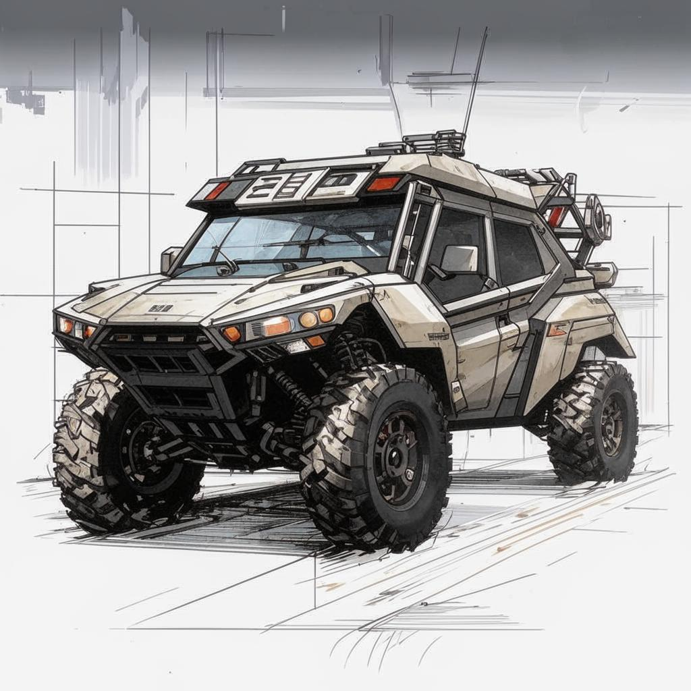

Выбор автомобиля для семьи: критерии и возможности
В условиях современного мира автомобиль стал неотъемлемой частью жизни многих семей. Он позволяет обеспечить комфортное передвижение по городу и за его пределами, выполнять повседневные задачи и путешествовать всей семьей. При выборе семейного автомобиля важно учитывать несколько ключевых параметров.
Основные характеристики
1. Объем двигателя: Для повседневной эксплуатации рекомендуется выбирать двигатель объемом от 1,6 до 2 литров. Такой объем обеспечивает достаточную мощность при умеренном расходе топлива.
2. Тип кузова: Универсал или минивэн – оптимальный выбор для большой семьи. Эти типы автомобилей предоставляют больше пространства для пассажиров и багажа.
3. Безопасность: Наличие подушек безопасности, системы стабилизации (ESP), антиблокировочной системы тормозов (ABS) и других современных систем безопасности является обязательным условием выбора.
4. Комфорт: В автомобиле должны присутствовать удобные сиденья, климат-контроль, подогрев сидений и другие опции, которые сделают поездки более приятными.
5. Расход топлива: Экономичный расход топлива позволит сократить затраты на эксплуатацию автомобиля. Оптимальный показатель расхода – около 7–10 литров на 100 км пути.
6. Простор салона: Семья должна чувствовать себя комфортно даже во время длительных поездок. Важно наличие достаточного места для ног и головы всех пассажиров.
7. Багажник: Объем багажника должен позволять разместить все необходимые вещи, включая детские коляски, чемоданы и покупки.
8. Надежность: Автомобиль должен быть надежным и не требовать частого ремонта. Желательно выбрать модель с хорошей репутацией среди автовладельцев.
9. Стоимость обслуживания: Низкая стоимость обслуживания и доступность запчастей также играют важную роль при выборе автомобиля.
Пример описания автомобиля
Автомобиль XXXX – это идеальный вариант для семьи, который сочетает в себе надежность, комфорт и экономичность. С двигателем объемом 1,8 литра он способен преодолевать большие расстояния без необходимости частых заправок. Кузов универсал предоставляет достаточно места как для пассажиров, так и для багажа. Безопасность обеспечивается наличием шести подушек безопасности и современной системой стабилизации. Комфортные сиденья с возможностью регулировки и климат-контроль делают каждую поездку удобной и приятной. Расход топлива составляет всего 8 литров на 100 км, что делает этот автомобиль экономически выгодным выбором. Просторный салон и вместительный багажник позволяют семье путешествовать с максимальным удобством.
Таким образом, выбирая семейный автомобиль, следует обратить внимание на вышеуказанные параметры, чтобы сделать правильный выбор и наслаждаться комфортными поездками вместе со своей семьей.
Yaratuvchilar:
Maket yaratuvchi : Bohodirov Muhamad Ali
Sayt Yaratuvchisi : Miyanmalikov Ahmadbek